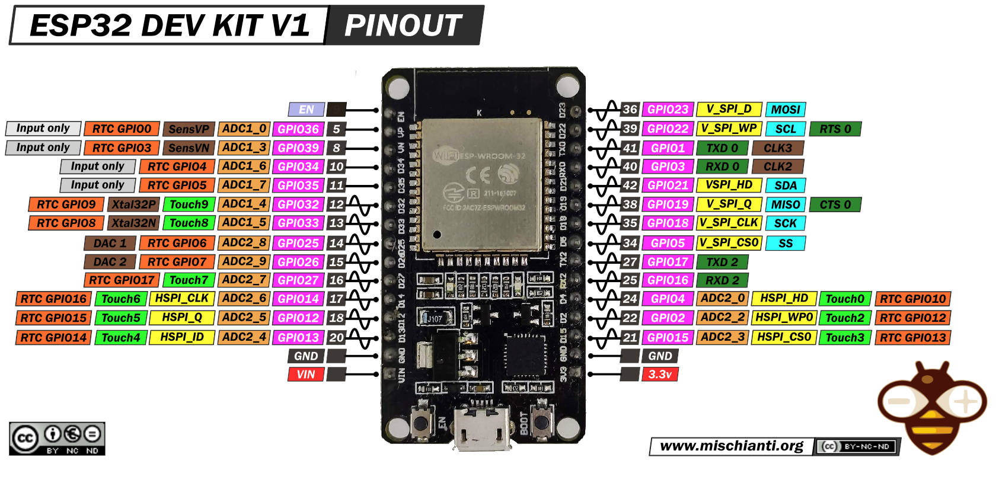
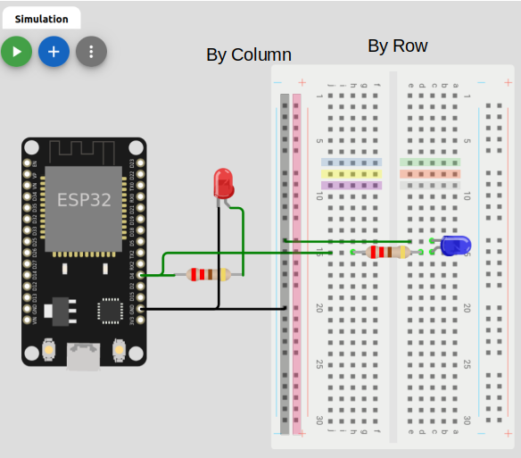
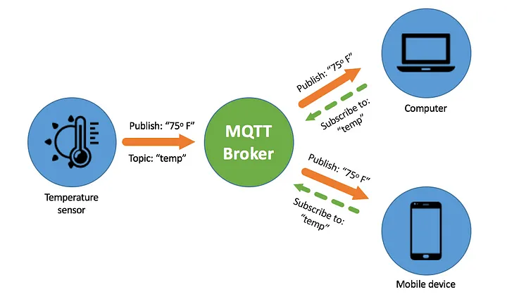
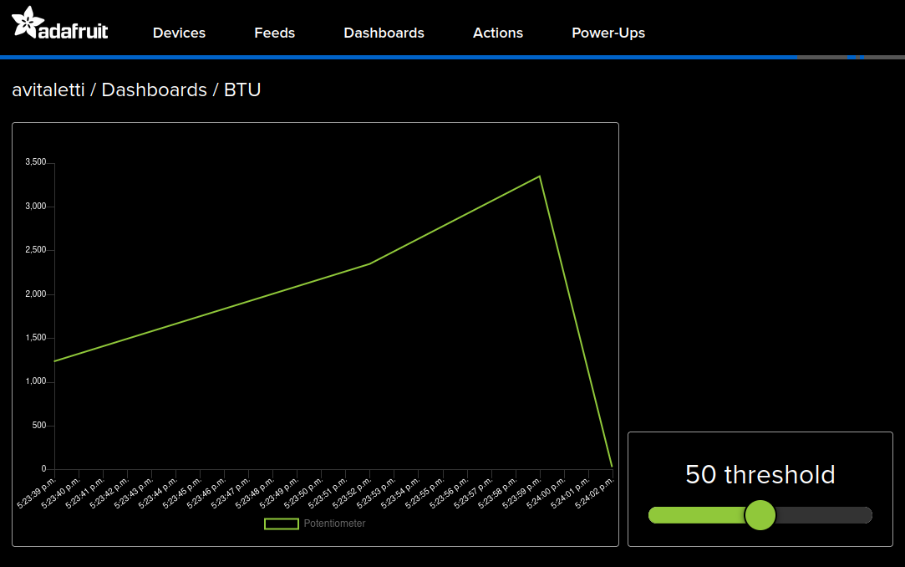
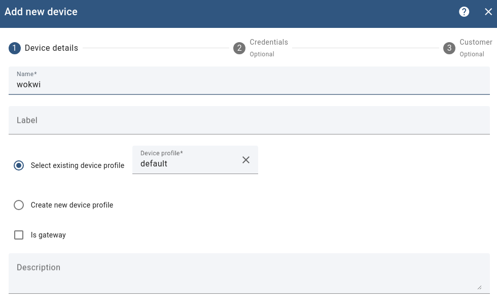

SESSION 2
GOAL: Small experiment (a single sensor). Prove you can integrate sensors suitable for you monitoring purpose. Focus on effectiveness, namely doing the right things, i.e., the Maker approach.
The reference hardware: ESP32-DevKit

Let's start by simulating it
Wokwi is an online Electronics simulator. You can use it to simulate Arduino, ESP32, STM32, and many other popular boards, parts and sensors.
Open a new project and select ESP32 as the platform and the Arduino template.
If you now open the diagram.json tab you have something like the following in the parts entry
"parts": [ { "type": "board-esp32-devkit-c-v4", "id": "esp", ...} ],
This implies that the pinout is the one in the devkit v4. To get the same pinout as the one in the picture above you need a V1 devkit, so you have to modify the entry as in the following
"parts": [ { "type": "board-esp32-devkit-v1", "id": "esp", ...} ],
To make running the serial interface be sure that under connection you have th following settings
"connections": [
[ "esp:TX0", "$serialMonitor:RX", "", [] ],
[ "esp:RX0", "$serialMonitor:TX", "", [] ],
.....
- The simplest actuator, namely a led
Understanding the Breadboard

- The Simplest sensor, namely a button
- A bit more interesting sensor, namely a potentiometer
- A simple example with SR04 Ultrasonic Sensor. The width is measured by the function pulseIn().

- A nice example with the MPU6050 accelerometer and gyroscope. Predictive Maintenance of Motors using Machine Learning. Ensemble Learning for Predictive Maintenance on Wafer Stick Machine Using IoT Sensor Data
A simple scenario
You want to transform a door into a smart door.
- A sensor will tell you when the door is open or closed → button
- A visual indicator will clearly show whether the door is open or closed → led
- Instead of a simple binary condition open/close you also want to know to what extent the door is open → potentiometer
MQTT
Publish/Subscribe

TOPICS:
- myhome/groundfloor/livingroom/temperature
- myhome/groundfloor/bathroom/temperature
- myhome/groundfloor/bathroom/humidity
- myhome/firstfloor/bathroom/temperature
- myhome/groundfloor/+/temperature (1 and 2)
- myhome/groundfloor/# (1,2 and 3)
- myhome/# (1,2,3 and 4)
It's time to be connected by MQTT and here there is a reference example. The most convenient way is to use your mobile an Access Point and configure SSID and password consequently.
Note that the topics names are assigned to be consistent with the adafruit dashboard (see example below), but you are free to use any name you like.
mosquitto_pub -h test.mosquitto.org -t "avitaletti/feeds/threshold" -m 2345
mosquitto_sub -h test.mosquitto.org -t "avitaletti/feeds/potentiometer"
Tip
- A multi platform easy to use alternative is https://mqtt-explorer.com/
- Another possible broker is mqtt://mqtt.eclipseprojects.io
Build a simple backend with https://io.adafruit.com/
- Create an account on io.adafruit.com, in my case the username is avitaletti.
- Click on the yellow key to get yor credentials to publish data
#define IO_USERNAME "avitaletti"
#define IO_KEY "xxxxxxxxxxxxxxxxxxxx"

The following code will publish the message 33 on the topic avitaletti/feeds/potentiometer and it is used by the IoT device to send the data acquired by the ADC
mosquitto_pub -h io.adafruit.com -u avitaletti -P xxxxxxxxxxxxxxxxxxxx -t avitaletti/feeds/potentiometer -m 33
The node can subscribe to avitaletti/feeds/threshold to get the commands from the backend
mosquitto_sub -h io.adafruit.com -u avitaletti -P xxxxxxxxxxxxxxxxxxxx -t avitaletti/feeds/threshold
- The dashboard link the components to the feeds and corresponding topics

In other words when the device publishes on the avitaletti/feeds/potentiometer topic a new entry is created in the line chart, while when you move the slider the corresponding value is published on avitaletti/feeds/threshold
Build a simple backend with thingsboard https://demo.thingsboard.io/login


https://thingsboard.io/docs/getting-started-guides/helloworld/?connectdevice=mqtt-linux
mosquitto_pub -d -q 1 -h "$THINGSBOARD_HOST_NAME" -p "1883" -t "v1/devices/me/telemetry" -u "$ACCESS_TOKEN" -m {"temperature":25}
NOTE: for the sake of convenience, we will use WiFi connectivity, however it should be now clear WiFi is usually not appropriate for IoT applications due to the excessive energy demand.
It is time to Work with a real device
- Download the code from Wokwi. It is also available on https://github.com/andreavitaletti/IoT_short_course/tree/main/src/simulator
- The easiest way it to use the Arduino IDE
- Since we are using the ESP32, you have to follow these intructions
- Select the DOIT ESP32 DEVKIT V1 as in the picture below and upload the code

- The only novelty is the vibration sensor SW-420 ... but please have a look to the SR04 Ultrasonic Sensor and adapt it to make it working with the SW-420.
This sketch could help
// Watch video here: https://www.youtube.com/watch?v=235BLk7vk00
/* Vibration sensor connected to Arduino pins as follows:
ESP32 Arduino Vibration Sensor
https://wolles-elektronikkiste.de/esp32-mit-arduino-code-programmieren
D18 --> GPIO18 --> G18 DOut
GND GND
+5V --> 3.3V VCC
*/
int EP = 18;
void setup(){
pinMode(EP, INPUT); //set EP input for measurment
Serial.begin(9600); //init serial 9600
}
void loop(){
long measurement =TP_init();
delay(50);
Serial.println(measurement);
}
long TP_init(){
delay(10);
long measurement=pulseIn (EP, HIGH); //wait for the pin to get HIGH and returns measurement
return measurement;
}
Through pulseIn() we can measure the duration of a vibration event exceeding the threshold, not the frequency of the vibrations themselves. Indeed, the Arduino pulseIn() function waits for a change in the binary input (Low to High in this instance) and returns the duration that the detected pulse was active (time for it to go back High to Low after going High).
QUESTION: Can we use this function to help in anomaly detection? see here for inspiration!